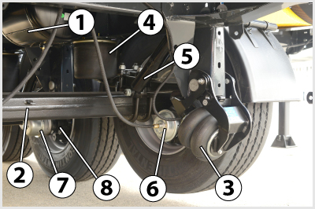

- 375. A képen látható 1-es jelűalkatrész... #704596
- a légfékrendszer légtartálya.
- egy víztartály.
- a tüzelőanyag-tartály.
- egy kenőolajtartály.

- 376. A képen látható 1-es jelű alkatrész... #704603
- a kétvezetékes pótkocsifékező-rendszer töltővezetékének kapcsolófeje.
- a kétvezetékes pótkocsifékező-rendszer fékező (vezérlő) vezetékének kapcsolófeje.
- egy hidraulikus fékcsatlakozó.
- a billenő felépítmény működtetésére szolgáló hidraulikus munkahenger tápcsatlakozója.

- 377. A képen látható kapcsolófejen a 2-es jelű műanyag alkatrész... #704609
- a védőfedél, amely a kapcsolófejet a szennyeződésektől védi.
- a szelepvezérlő fedél, amelyet elfordítva nyit a kapcsolófej zárószelepe.
- a zárószelep, melyet elfordítva szabaddá válik a kapcsolófejen keresztül a sűrített levegő útja.
- a zárószelep, amely a kapcsolófejek összekapcsolásakor elfordul, és ezzel szabaddá teszi a kapcsolófejeken keresztül a sűrített levegő útját.

- 378. A képen látható 1-es jelű alkatrész egy... #704612
- légtartály.
- tüzelőanyag-tartály.
- víztartály.
- kenőolajtartály.

- 379. A képen látható 1-es jelű alkatrész egy forgózsámolyos pótkocsi... #704675
- kétvezetékes légfékrendszerének töltő kapcsolófeje.
- kétvezetékes légfékrendszerének fékező kapcsolófeje.
- egyvezetékes légfékrendszerének kapcsolófeje.
- ISO 3731 szerinti, 24S típusú,7 pólusú elektromos csatlakozója.
- 380. A képen látható 1-es jelű kapcsolófejen a 3-as jelű műanyag alkatrész... #704676
- a védőfedél, amely a kapcsolófejet a szennyeződésektől védi.
- szelepvezérlő fedél, amelyet elfordítva nyit a kapcsolófej zárószelepe.
- a zárószelep, melyet elfordítva szabaddá válik a kapcsolófejen keresztül a sűrített levegő útja.
- a zárószelep, amely a kapcsolófejek összekapcsolásakor elfordul és ezzel szabaddá teszi a kapcsolófejeken keresztül a sűrített levegő útját.
- 381. A vonató melyik levegőellátó körével közös a pótkocsi sűrítettlevegő-ellátása kétvezetékes pótkocsi-fékrendszer esetén? #704908
- A rugóerőtárolós rögzítőfék körével.
- A hátsó üzemi fékkörrel.
- A segédberendezésekkel.
- Az első üzemi fékkörrel.